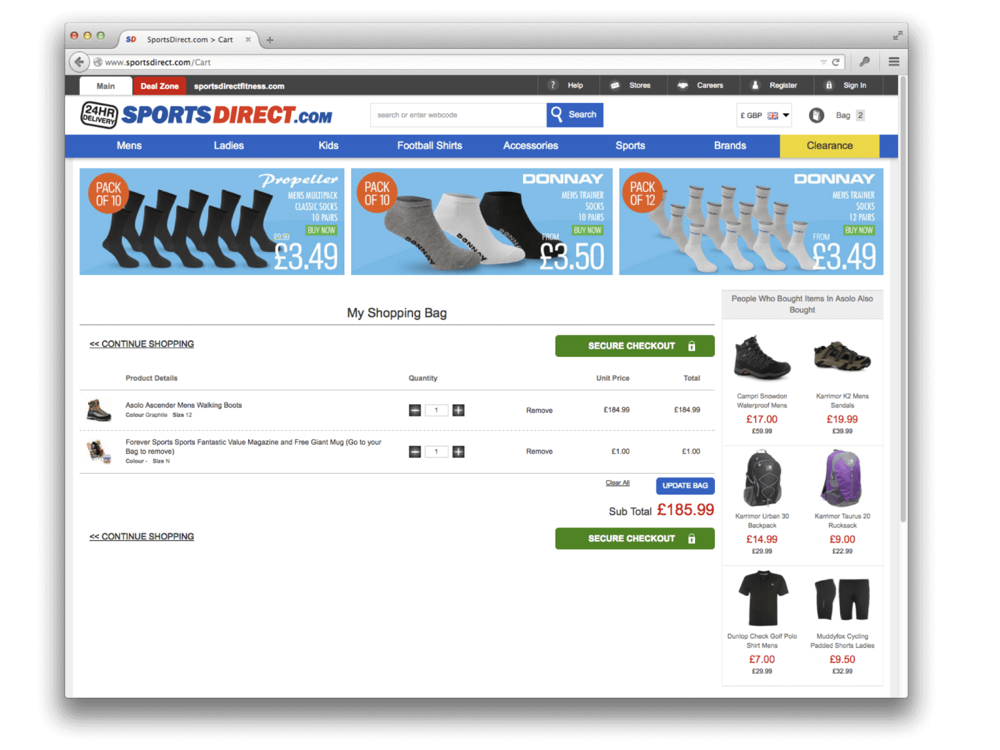
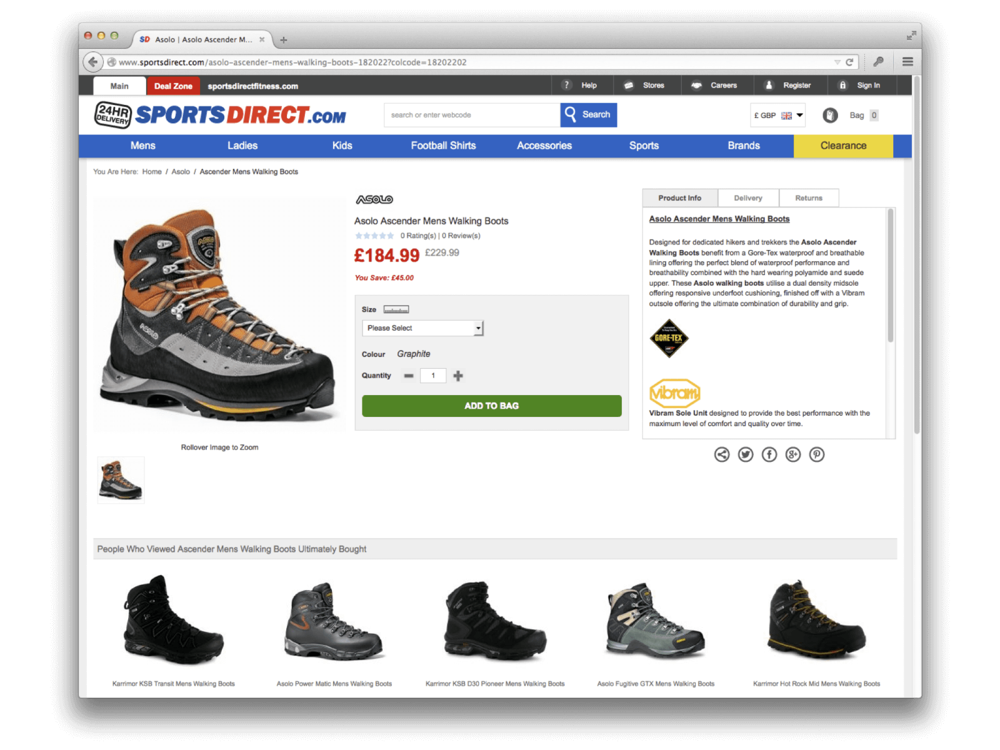

Sneaking involves intentionally withholding or obscuring information that is relevant to the user (e.g. additional costs or unwanted consequences), often in order to manipulate them into taking an action they would not otherwise choose.
In 2015, UK sports retailer sportsdirect.com was found to be sneaking an unwanted magazine subscription into users' shopping baskets during the checkout process. The magazine cost an extra £1, and was added without users' explicit consent or knowledge. If users noticed it, they had to actively remove it from their basket if they did not wish to purchase it.
|  |  |
| Home | Dark Patterns | Addictive Design | Resources |